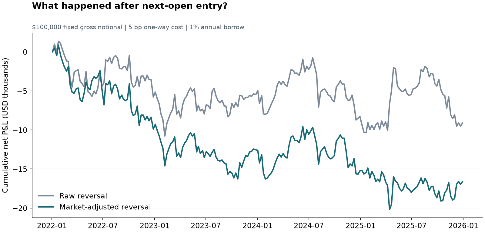
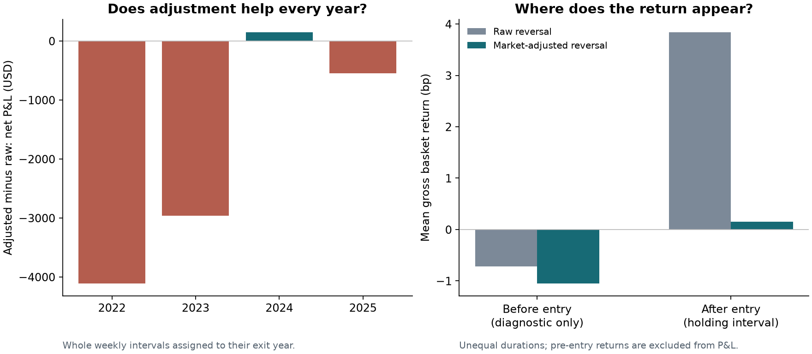
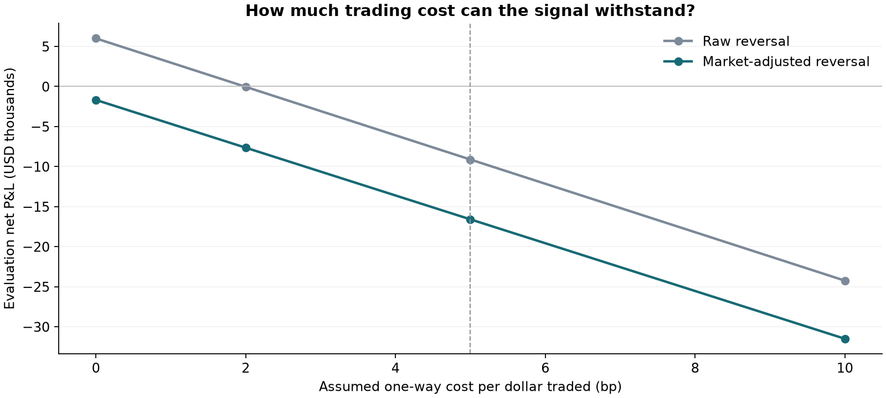

QUANTITATIVE RESEARCH · FIRST IMPLEMENTATION
Does removing the market improve a sector reversal signal?
Eleven US sector ETFs. Two fixed signals. Next-open entry. A small test of whether recent sector weakness predicts a rebound.
Evaluation: 208 weekly observations, 2022–2025.
The paired interval crosses zero: this sample does not establish a reliable advantage from market adjustment.
Annualized mean net difference: -1.87 percentage points; descriptive 95% interval [-7.69, +3.77].
The comparison
Both rules buy the three weakest sectors and short the three strongest. The raw rule ranks five-session returns.
The adjusted rule first removes each sector's estimated response to SPY. Betas use 126 earlier sessions ending before the signal week.
Signals are observed after the weekly close; returns start at the following session's open reference.
| Signal | Gross P&L | Net P&L | Break-even cost | Weekly drawdown |
|---|
| Raw reversal | $7,994 | −$9,125 | 1.98 bp | $12,128 |
| Market-adjusted reversal | $310 | −$16,596 | None at ≥0 bp | $21,044 |
USD 100,000 fixed gross notional; 50,000 long and 50,000 short at entry. Net includes assumed 5 bp one-way net turnover costs and 1% annual borrow.
Break-even cost is after borrow. These are historical proxy calculations, not live fills, compounded returns, or demonstrated alpha.

In the separate 2019–2021 period, raw reversal returned −$3,807 and market-adjusted reversal $4,335 net.
The earlier ranking did not persist in the later evaluation. Both periods use the same pre-specified rules.
Two checks behind the headline
Annual differences reveal concentration in particular years. The pre-entry gap is shown separately: a completed closing-price signal cannot earn a return before the stated entry.

Trading costs change the decision
Unchanged holdings are netted when rebalancing. Entry, changed exposure and final liquidation all incur cost. Borrow is a scenario, not a historical quote.

What this can and cannot establish
The question, universe and parameters were saved before this experiment's first run.
2019–2021 is reported separately from the 2022–2025 evaluation. The work is informed by prior literature and is a retrospective replication and extension.
Prices are Yahoo Finance historical snapshots fetched on 26 October 2026. Adjusted opens are total-return proxies, not executable dollar prices.
ETF holdings and index definitions change. Dollar-neutral entry weights do not guarantee beta neutrality. Borrow availability, market impact and exact dividend cash accounting are not observed.
The interval resamples four-week blocks; it cannot create more independent years of evidence.
Source files: results and provenance · weekly ledger · pre-run protocol · method and sources